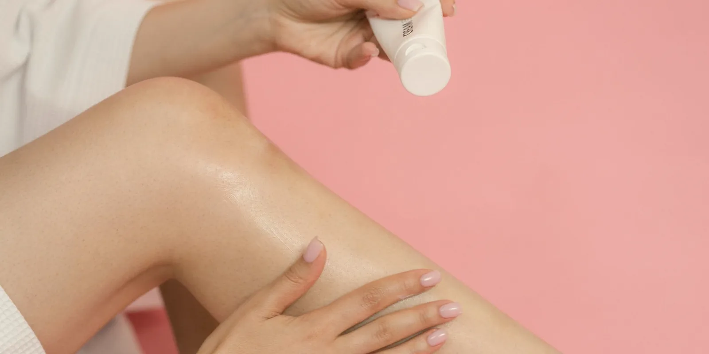

Piel tensa y brillante en las piernas: qué puede significar
Te miras la pierna al final del día y la piel se ve distinta: más lisa, más brillante, como si estuviera a punto de estallar. No es tu imaginación. Esto es lo que suele haber detrás, y cuándo sí conviene revisarlo pronto.

La piel tensa y brillante en las piernas casi nunca es un problema de la piel en sí: es la piel estirada desde adentro por líquido que se acumuló en el tejido. Cuando hay más volumen debajo, la piel pierde sus pliegues naturales y refleja más la luz; por eso se ve como "hinchada por dentro", aunque al tacto todavía se sienta blanda.
Si vienes arrastrando piernas pesadas o várices desde hace tiempo, seguro ya te hiciste la pregunta tú misma: "¿por qué se me ve la piel como estirada al final de la tarde?". No hay una sola causa, pero sí un patrón bastante claro detrás.
Lo que casi siempre hay detrás: insuficiencia venosa
Cuando las válvulas de las venas de las piernas no cierran bien, la sangre tiene más dificultad para subir de vuelta al corazón y parte de ella se queda represada en la parte baja de la pierna. Esa presión extra empuja líquido hacia el tejido que rodea la vena, y ese líquido es el que estira la piel desde abajo. Es el mismo mecanismo que explica la hinchazón al final del día que sienten muchas pacientes.
Con el tiempo, si la hinchazón se repite día tras día sin manejo, la piel puede quedar con cambios más permanentes: más oscura cerca del tobillo (lo que revisamos en manchas en los tobillos), más gruesa o endurecida en algunas zonas. Por eso no conviene esperar a que "se vea mal" para consultar: lo ideal es revisarlo cuando todavía es solo brillo y tensión.
Otras causas de la piel tensa y brillante en las piernas
No toda piel brillante en la pierna es insuficiencia venosa. El linfedema (cuando el sistema que drena la linfa no funciona bien) produce una hinchazón más persistente, que no baja tanto con el descanso, y con el tiempo la piel puede sentirse más firme, casi de textura distinta. La retención de líquidos por otras causas —el calor de Medellín en tierra caliente, estar muchas horas sentada o de pie, algunos medicamentos, o condiciones del corazón o los riñones— también puede dar ese mismo aspecto.
En Seravena preferimos no asumir cuál de estas causas es la tuya solo por cómo se ve la piel. Un eco doppler venoso, que hacemos en el mismo consultorio de El Poblado, muestra si las venas están devolviendo bien la sangre o no, y eso cambia por completo el manejo que se recomienda.
Las dos señales que no deben esperar
Hay dos situaciones distintas que también dan piel tensa y brillante, y ninguna de las dos es para esperar al día siguiente.
- Infección de la piel (celulitis o erisipela): la zona se ve roja, caliente, duele al tocarla, y casi siempre hay fiebre o escalofríos. A diferencia de la hinchazón circulatoria, suele afectar un área puntual, no toda la pierna por igual.
- Trombosis venosa: hinchazón que aparece de un momento a otro, solo en una pierna, con dolor y calor local. No es la hinchazón progresiva de siempre: es nueva, súbita y unilateral.
Ninguna de estas dos se revisa "a ver cómo sigue". Se consulta ese mismo día.
Qué sí ayuda mientras tanto (y qué no)
Si la piel se ve tensa solo al final del día y la hinchazón baja al elevar las piernas o al dormir, es razonable empezar por lo básico: elevar los pies al llegar a casa, moverte en vez de pasar horas quieta de pie o sentada, y usar medias de compresión si ya las tienes recomendadas. Ninguna crema deshace una hinchazón que viene de las venas por dentro, aunque mantener la piel hidratada sí ayuda a que no se reseque ni se agriete con el estiramiento.
Lo que sí vale la pena hacer antes de la próxima cita: anota desde cuándo notas la piel así, si es en una pierna o en las dos, y si cambia según la hora del día o el calor. Esa información, junto con una valoración de várices en Medellín, es lo que permite saber qué hay detrás sin adivinar.
Si la hinchazón ya lleva semanas, si notas la piel cada vez más tirante o si simplemente quieres descartar que sea algo más que cansancio, puedes agendar una valoración y revisarlo con calma.
Preguntas frecuentes
¿Por qué se me pone la piel de la pierna brillante y estirada?
Casi siempre porque hay líquido acumulado debajo de la piel (edema). Cuando el tejido se llena de líquido, la piel se estira desde adentro y por eso se ve más lisa, tensa y con un brillo que antes no tenía. La causa más frecuente es que las venas de las piernas tienen dificultad para devolver la sangre al corazón, lo que se conoce como insuficiencia venosa.
¿La piel brillante en las piernas siempre es grave?
No. La mayoría de las veces es hinchazón que empeora con las horas de pie, el calor o el sedentarismo, y mejora al elevar las piernas o al día siguiente. Se vuelve una señal de alarma cuando aparece de un momento a otro en una sola pierna, con dolor, o cuando se suma calor, enrojecimiento y fiebre.
¿Cómo distingo si es solo hinchazón o una infección de la piel?
La hinchazón por circulación suele ser de las dos piernas, sin dolor intenso al tacto ni fiebre, y empeora progresivamente durante el día. Una infección como la celulitis o la erisipela, en cambio, suele afectar una sola zona, se ve más roja y caliente, duele al tocarla y casi siempre viene acompañada de fiebre o malestar general. Ante la duda, consulta pronto.
¿Cuándo debo ir a urgencias por piel brillante y tensa en la pierna?
Si la pierna se hincha de un momento a otro, solo de un lado, con dolor; si la piel está caliente, roja y duele al tacto; o si además tienes fiebre, escalofríos o dificultad para respirar. Esas combinaciones requieren valoración médica el mismo día.